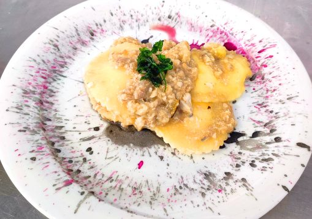
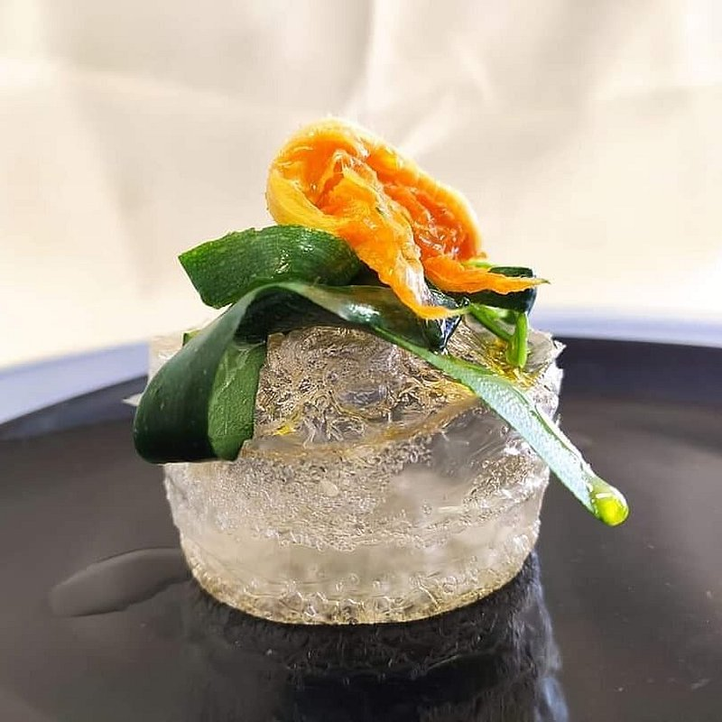
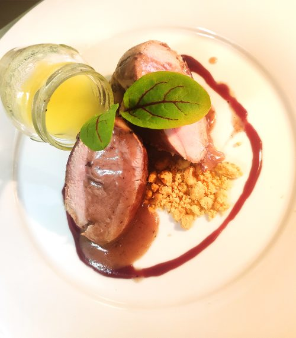
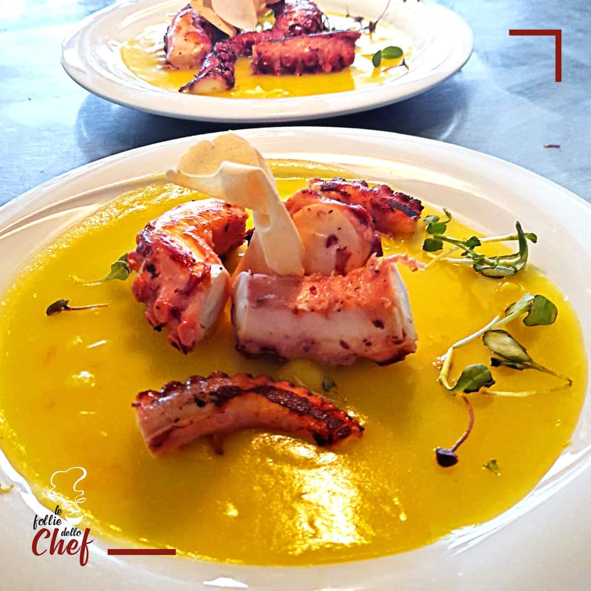
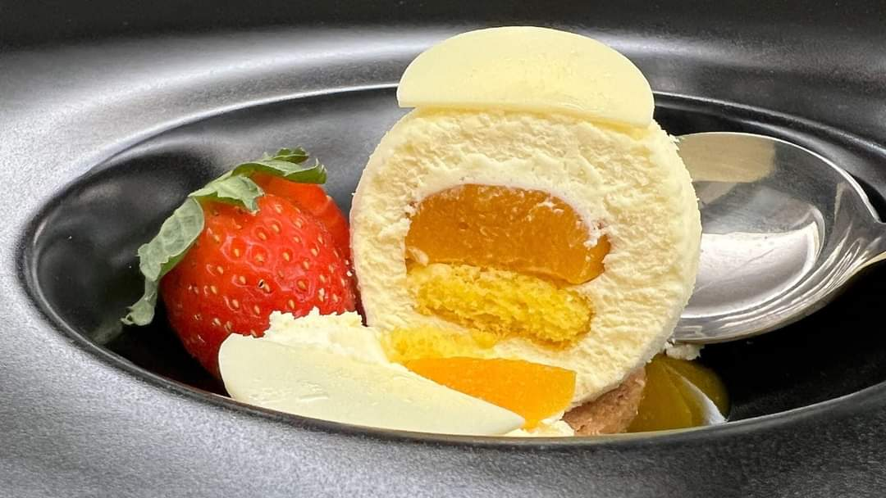

Menu Ristorante
La Rosticceria e La Friggitoria
Panuozzo al prosciutto crudo e mozzarella di bufala
€9.00
Panuozzo al salmone marinato, rucola, scaglie di grana e fette di limone
€9.00
Panuozzo alla bresaola, rucola, scaglie di grana e fette di limone
€9.00
Bom Bon alla salsiccia lucana e scamorza a pasta filata
€1.00/pz
Crocchè di patate a pasta gialla
€1.00/pz
Patate fritte* e salse
€3.50
Patate fritte chips* e salse
€3.50
Patate fritte con buccia* e salse
€3.50
Antipasti
Antipasto “Le Follie”
€16.00
Carpaccio salado di vitello
€11.00
Flan di caciocavallo podolico con salsa ai lamponi
€11.00
Antipasto vegetariano “Le follie”
€14.00
Tentacolo di polpo su crema di patate e lime
€14.00
Primi Piatti
Cavatello di grano arso alla salsiccia e crema di piselli
€14.00
Gnocchi al pesto verde
€13.00
Spaghetti alla crema di aglio fermentato e olio extra vergine
€13.00
Raviolo di baccalà con burratina e crumble di olive
€14.00
Strascinati ai funghi porcini su crema di patate allo zafferano
€13.00

Secondi Piatti
Filetto di maialino alla barbabietola e salsa di mele
€16.00
Tagliata di vitello alla rucola e scaglie di grana
€17.00
Filetto di vitello all’Aglianico del Vulture
€19.00
Baccalà in giallo
€16.00
Girella di salsiccia con crema di melanzane e pomodorini canditi
€15.00
Agnello scalzato alle erbette del Mediterraneo
€19.00
Tagliata di anatra ai frutti rossi e lime
€17.00
Caesar salad di pollo “Le Follie dello chef”
€15.00

Alla Griglia
Selezione di Lombata di Podolica
€4.50/etto
Costata di Angus
€4.00/etto
Selezione di Lombata Chianina
€5.00/etto
Selezione di Lombata Marchigiana
€5.00/etto

Specialità di Mare
Antipasto freddo e caldo di pesce
€19.00
Antipasto freddo di pesce
€14.00
Plateau di pesce crudo
€19.00
Ostrica Spécial Gillardeau
€4.00/pz
Tartare di tonno
€16.00
Impepata di cozze
€12.00
Frittura di calamari e gamberi
€16.00
Frittura di paranza (solo su ordinazione)
€17.00

La Piccola Pasticceria
Tiramisù Le Follie 2.0
€4.50
Sfera di cioccolato bianco e inserto tropicale
€4.50
